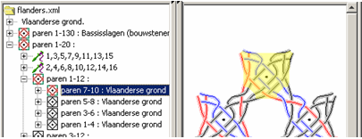
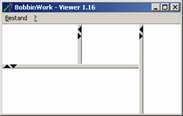

Table of Contents
A quick tour through the BobbinWork Viewer
start the program
Load a drawing
You can just select one from the menu or check if the download page has more. You are invited to add your own diagrams to the download page.Threads or pairs
Simply switch between presentationsSelect a diagram section
by clicking on it or by browsing through the tree
Replace a stitch
please replace with an English version of the last release.(or group of stitches)

Thread presentation
please replace with an English version of the last release.Define the presentation of threads
Fetch or apply the thread presentation
please replace with an English version of the last release.

You might want to zoom in. In complex drawings the system needs a while to show the high light.
Panels
please replace with an English version of the last release.Drag the divider or open/close a panel with

Example
please replace with an English version of the last release.Changing from a vierge in cloth stitch to a rose ground in half stitch just requires deleting and replacing a few stitches

The rose ground shows a weakness of the current implementation: the program doesn't know how to tension the threads